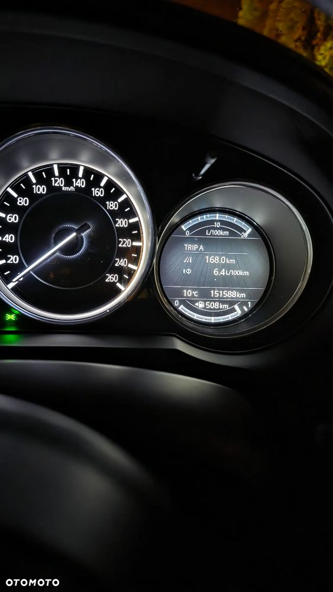
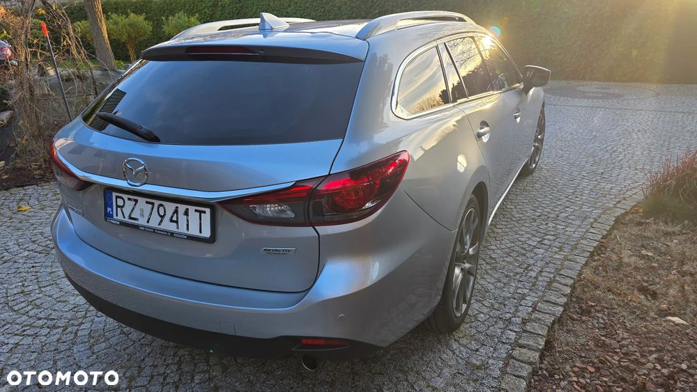
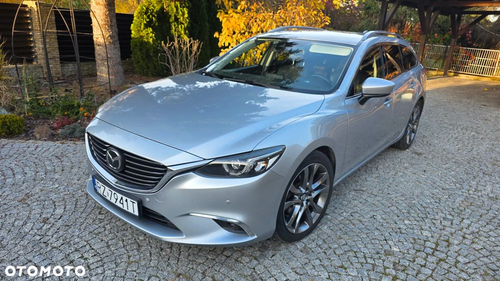

Sprzedam
Mazda 6, kombi, srebrny metalic (silver sonic), 2,5 benzyna skyactive, pierwsza rejestracja 15.03.2018r.
Wyposażenie max - zakup 2,5 benzyny dawał maksymalne wyposażenie na tamten moment. Mamy tu tzw miękką hybrydę, automat, tempomat aktywny, matrycowe światła led i wiele innych. Dwa komplety kół.
Jestem pierwszym włascicielem, kupiona w salonie. Serwisy - tylko wymiany eksploatacyjne (oleje, filtry itp.). Ostatnio wymienione tarcze i klocki - przód oraz sworznie wahaczy przednich (po 150 tys!! - co świadczy o wytrzymałości i długiej bezawaryjności Mazdy). Posiada drobne rysy użytkowe-parkingowe. Auto jest w stałym użytkowaniu. Więcej zdjęć tylko poważnie zainteresowanym
Nie będę lał wody, ale Mazda znana jest ze swojej długowieczności, a bajki o słabym lakierze szkoda nawet komentować. Sam kupuję kolejną Mazdę.
Umowa kupno-sprzedaż
Polecam
